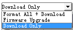
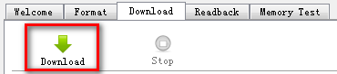
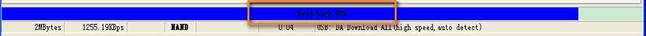
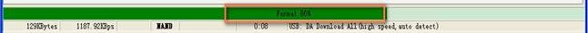
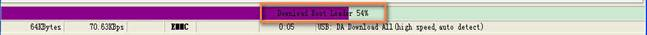
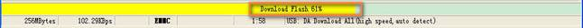
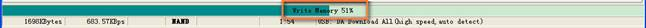

Download Mode
�� BootRom USB Download Mode
– Enter BootRom Download Mode
�� Case 1: Target without Pre-Loader, first time to download, for example, BootRom will enumerate a USB port (PID: 0003, VID: 0E8D) after USB cable is plugged in.
�� Case 2: Target with Pre-Loader, to do re-download, for example, BootRom will enumerate a USB port (PID: 0003, VID: 0E8D) ONLY after USB cable is plugged in while USB Download Key is pressed as well.
– Procedure
�� Step1: After Base Band(BB) Chip reset, FlashToolLib.dll will do handshake with BootRom to download DA into internal ram by USB cable first;
�� Step2: After DA is downloaded into internal ram, DA will be executed. FlashToolLib.dll will do handshake with DA to download ALL images to external flash;
�� Pre-Loader USB Download Mode
– Enter Pre-Loader Download Mode
�� NOTE: Pre-Loader Download Mode is available only when Pre-Loader has been existed in the target.
�� Target with Pre-Loader, to do re-download, for example, Pre-Loader will enumerate a USB port (PID: 2000, VID: 0E8D) after USB cable is plugged in.
– Procedure
�� Step1: After Base Band(BB) Chip reset, FlashToolLib.dll will do handshake with Pre-Loader to download DA into internal ram by USB cable first;
�� Step2: After DA is downloaded into internal ram, DA will be executed. FlashToolLib.dll will do handshake with DA to download ALL images to external flash;
�� UART Download Mode
– Prerequisite
�� Battery is required and need to make sure there is enough power supply.
– Procedure
�� Step1: After Base Band(BB) Chip reset, FlashToolLib.dll will do handshake with Pre-Loader to download DA into internal ram by UART1 cable first;
�� Step2: Continue Download images by UART1 cable.
Download Step
1. Power off target
A handshake must be performed between Smart Phone Flash Tool and the target mobile phone, thus the target must initially be powered off, and connected to the PC via a download cable.
For USB download, please pull out both Cable and Battery.
2. Select DA
Please make sure the Download Agent has been assigned.
3. Select Scatter File
Please make sure correct scatter file has been assigned.
4. Select Download Scene
Select the expected Download Scene before download.

5. Configure Options
Open ��Option Dialog�� to select the expected options for download method, power supply and speed switch mode.
6. Start download
Press ��Download�� button to start downloading image.

7. Power on target
Power on the target and the download procedure will begin.
8. Stop download
Note that to interrupt the download process at any time, press the stop button or f10.
Download Process Show
Connection:

Readback:

Format:

Download:


Restore:
